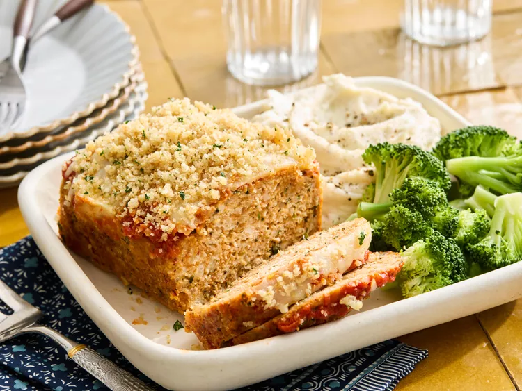

Pastel de carne de pollo a la parmesana
En este pastel de carne de pollo a la parmesana, los sabores italianos son los protagonistas. Hecho con pollo molido, queso parmesano y condimentos de hierbas, cubierto con marinara y mozzarella, y terminado con crujientes migas de panko sazonadas, es ideal para acompañar tu pasta favorita y una ensalada verde.

Ingredientes
- 1 libra de pollo molido
- 1 taza de cebolla finamente picada
- 2 dientes de ajo picados
- 1 huevo grande , ligeramente batido
- 1/4 taza más 1 cucharada de perejil fresco picado , dividido
- 1 frasco (15,5 onzas) de salsa marinara preparada , dividida
- 3/4 taza de pan rallado sazonado al estilo italiano
- 1/3 taza más 2 cucharadas de queso parmesano recién rallado , dividido
- 1 1/2 cucharadita de mezcla de condimentos de hierbas italianas
- sal y pimienta negra recién molida, al gusto
- 1/3 taza de queso mozzarella rallado
- 1 1/2 cucharadas de mantequilla sin sal
- 1/3 taza de pan rallado panko
- 1/2 cucharadita de ajo en polvo
Instrucciones
paso
Reúne los ingredientes. Precalienta el horno a 180 °C (350 °F) y forra un molde para pan con papel vegetal o papel aluminio.paso
Coloque el pollo molido en un tazón grande. Agregue cebolla, ajo, huevo, 1/4 taza de perejil, 1/2 taza de salsa marinara, pan rallado con sazón italiano, 1/3 taza de parmesano, condimento italiano y sal y pimienta al gusto. Mezcle con las manos para integrar los ingredientes. Agregue la mezcla de pollo al molde preparado y forme con cuidado un pan.paso
Hornee en el centro del horno precalentado durante 45 minutos.paso
Saque el pan del horno y úntelo con 1/4 de taza de salsa marinara. Espolvoree la mozzarella uniformemente por encima. paso
Hornear durante 15 minutos más. Dejar enfriar sobre una rejilla durante unos 10 minutos.paso
Mientras tanto, derrita la mantequilla en una sartén a fuego medio. Cuando la mantequilla deje de chisporrotear, agregue el panko y el ajo en polvo. Cocine, revolviendo con frecuencia, hasta que el panko esté ligeramente tostado, de 3 a 4 minutos. Retire del fuego y deje enfriar, de 4 a 5 minutos.paso
Incorpore las 2 cucharadas restantes de queso parmesano y la cucharada restante de perejil picado.paso
Sirva el pastel de carne en un plato, cubra con la mezcla de parmesano y panko. Sirva con la salsa marinara restante y decore con ramitas de perejil u otras hierbas frescas, si lo desea.
Home